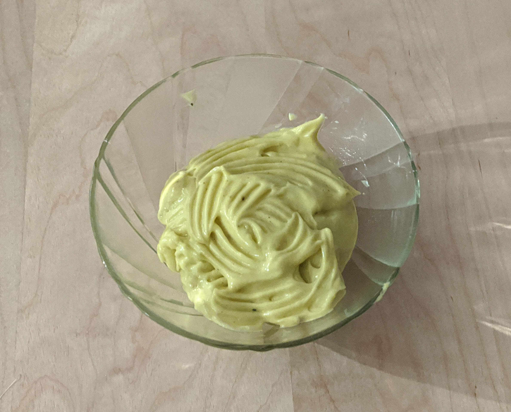

Mayonnaise

Pour, allez, à la louche, 3 ou 4 personnes (2 en cas de gros sacs) :
- 1 jaune d'œuf
- Une cuillère à soupe de moutarde
- Sel, poivre
- (Facultatif) Piment doux
- Huile d'olive (la quantité dépend de la quantité de mayonnaise voulue)
- Mettre dans le bol le jaune d'œuf, la moutarde, le sel, le poivre, le piment doux si t'as envie, et mélanger au fouet électrique pour que ça soit homogène.
- Rajouter en mince filet l'huile d'olive en continuant de fouetter. Le but est que l'ensemble reste à peu près tout le temps homogène.
- Quand y'a assez de mayonnaise, arrêter de verser de l'huile mais continuer de mélanger le plus vite possible pour que ça durcisse.
- Mettre au frigo avant de servir.
Remarque : cette recette est plus facile avec un robot doté d'un fouet. Si la mayonnaise se sépare et devient liquide, l'explication la plus probable est qu'on a ajouté trop d'huile trop vite. Dans ce cas, on peut tenter de refaire la première étape (avec juste le jaune d'œuf et la moutarde), et de faire le reste de la recette en utilisant la mayonnaise ratée à la place de l'huile d'olive ; en prenant bien soin de ne pas aller trop vite.
Remarque 2 : une fois que la mayonnaise est bien solide, on peut la mélanger avec d'autres choses en quantité raisonnable, et normalement elle reste solide. Une cuillère à soupe de sriracha pour un côté pimenté, une cuillère à café d'épices en poudre (cumin, curry, paprika…) pour ajouter des saveurs, ou trois-quatre gousses d'ail noir écrasé pour un chouette goût fermenté.